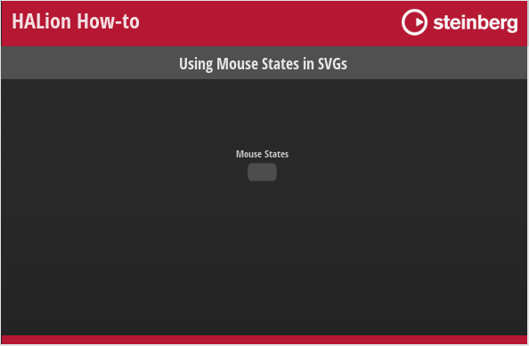

/ HALion Developer Resource / HALion Tutorials & Guidelines / How-tos /
Using Mouse States in SVGs
(Since HALion 7.0)
On this page:
You can use variables related to mouse actions to modify a SVG resource that is assigned to a Switch control. The advantage is that you don't have to assign separate resources to the different states of a Switch control to indicate its current state. The indication of a particular state is defined within the SVG resource itself using Lua expressions. Please note that this cannot be used in combination with animations, as these are only executed when switching between the different states of a switch and the assigned resources.
❕ See Animating Switches Using SVGs for details on using animations with Switch controls.
Defining Mouse States
The mouse states are defined in the SVG resource properties by using Lua expressions. An expression begins with $ followed by (). Everything inside the brackets will be evaluated and returns the effective value for the property.
$(expression)
You can use the following variables in Lua expressions:
| Variable | Description |
|---|---|
| On | The on-state of the switch. |
| Down | The down-state of the switch. |
| Hover | The hover-state of the switch. |
Using Mouse States
The following example is intended as an inspiration for you to develop your own solutions and ideas.
Example VST Preset

To explore the template in this example:
- Load Using Mouse States in SVGs.vstpreset.
- Open the Macro Page Designer, go to the GUI Tree and select the 'SVG Mod Switch' template.
- Click Edit Element
 to examine the template.
to examine the template. - Inside the template, select the Switch control. Take a look at which Bitmap resource has been assigned to the off-state of the switch.
- Go to the Resources Tree and select the corresponding SVG resource. Take a look at the IDs, properties and values as listed below.
Indicating Mouse States
Mouse States
Resources: SVGMod_Rect SW.
| ID | Property | Value |
|---|---|---|
| Rect | fill | hsla(154,$(0+On*40)%,$(30+Hover*20+On*20)%,1) |
Description: Each state of the switch shows a different color, including the hover-states for the on- and off-states.